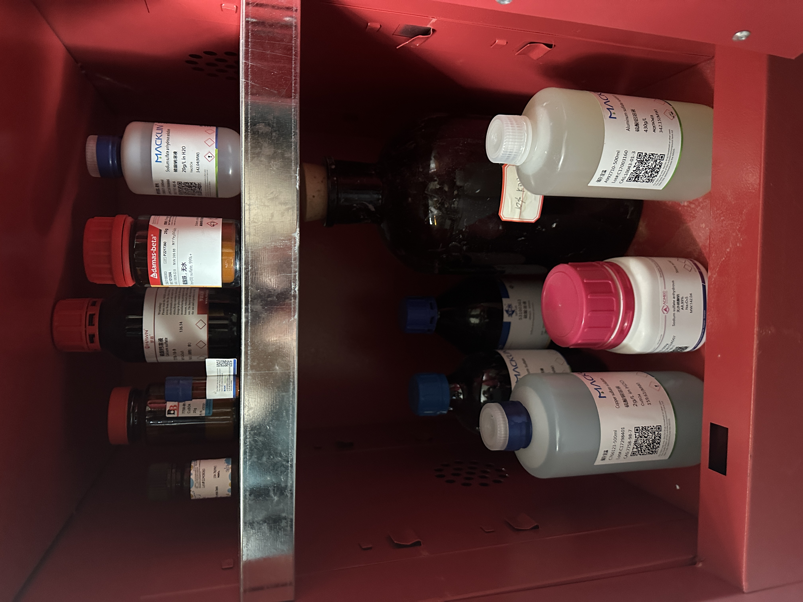
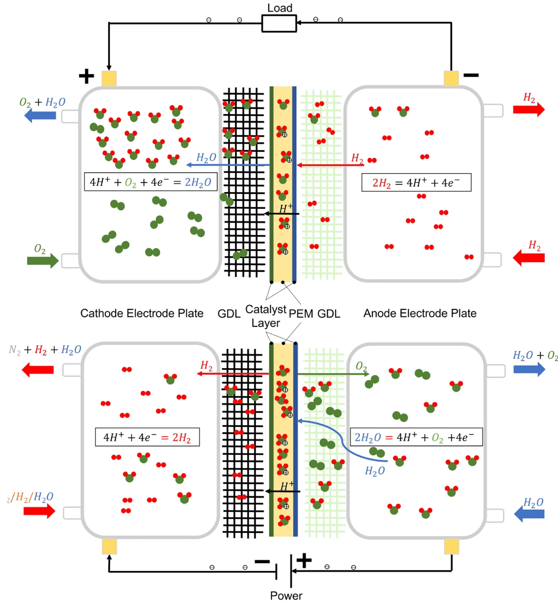
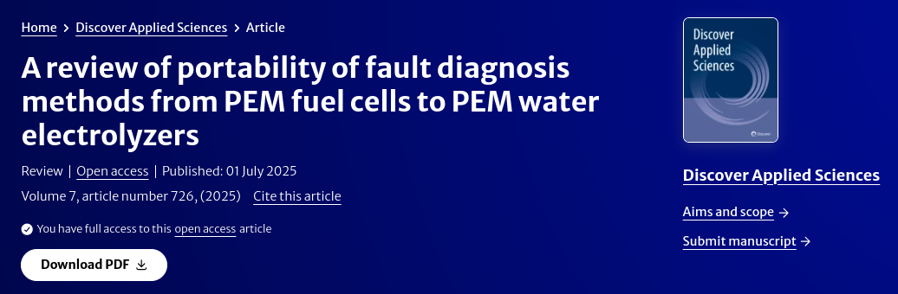

About
Experiences
2023.09 – 2026.07 (expected)
M.Eng Student & Researcher @ School of Automotive Studies, Tongji University
AI4Science for PEM fuel cells and PEM water electrolyzers.
Focus on ion contamination diagnosis, physics-informed modeling, and multi-modal data fusion.
Data Communication Intern @ Porsche Engineering
Worked on data communication and engineering support, bridging automotive engineering practice and data-driven methods.
2018.09 – 2023.06
B.Eng Student @ School of Automotive Studies, Tongji University
Major in Automotive Engineering, with early research in hydrogen energy and fuel cell systems.
Publications ( / )

In preparation, 2025 (to be updated)

Discover Applied Sciences, 2025

[Title to be updated]
[Venue / Year to be updated]
Selected Honors & Awards
- (to be updated)